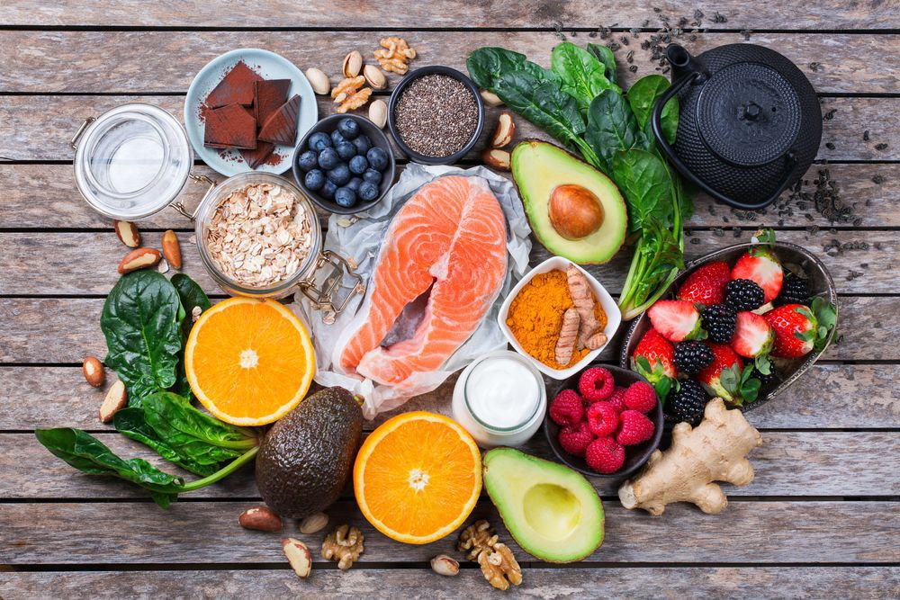

Move in ways you enjoy
Walking, cycling, stretching, dancing, or playing a sport can all count. Aim for regular movement rather than an all-or-nothing plan.
Physical health
Physical health includes how you move, eat, sleep, and respond to the demands of daily life. A consistent routine can improve energy, resilience, and long-term wellbeing.
Use these ideas as a starting point. Choose one small change and repeat it until it becomes easier.
Walking, cycling, stretching, dancing, or playing a sport can all count. Aim for regular movement rather than an all-or-nothing plan.

Build meals around vegetables or fruit, protein, whole grains, and healthy fats where possible. Regular meals can support concentration and mood.

Keep a consistent bedtime, reduce screens before bed, and create a calm sleeping space. Rest is essential for recovery.

Keep water nearby and drink through the day. Your needs vary with climate, activity, and health, so listen to your body too.

Seek appropriate medical advice when something does not feel right, and follow local guidance for routine check-ups and vaccinations.